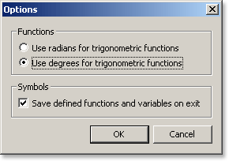

The following options are available in the options dialog box:
- Use radians for trigonometric functions - when using trigonometric functions such as sine and cosine, the input parameter will
be interpreted as a radian angle measure. Inverse trigonometric functions such as Arccosine will return answers in radians.
- Use degrees for trigonometric functions - when using trigonometric functions such as sine and cosine, the input parameter will
be interpreted as an angle measure in degrees. Inverse trigonometric functions such as Arccosine will return answers in degrees.
- Save defined functions and variables on exit - this option, when selected, will keep all previously defined user functions and
variables saved and loaded once again next time MiniCalc is opened.